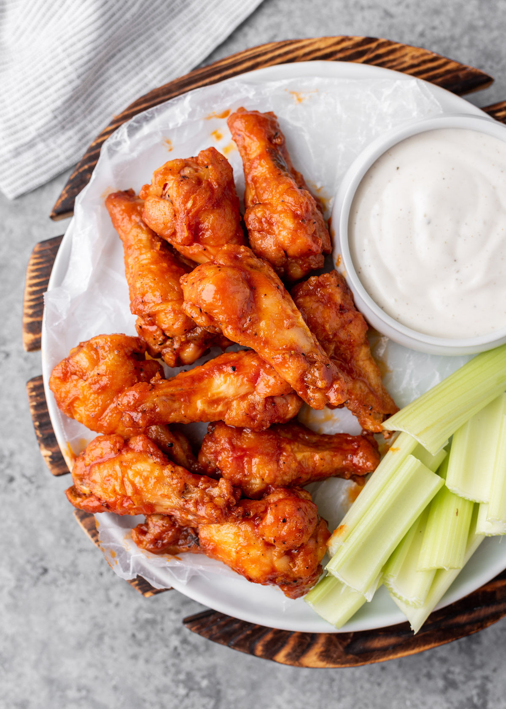

Buffalo Wings Recipe

Description
This is a recipe for Buffalo Wings!
Ingredients
- 5 pounds chicken wings, separated at joints, tips discarded
- 4 cups vinegar-based hot pepper sauce
- 1/4 cup butter
- 6 tablespoons blue cheese salad dressing
- 3 pickled cherry peppers, thinly sliced
- 1/2 onion, finely chopped
- 1/2 teaspoon freshly ground black pepper
- 1/2 teaspoon crushed red pepper flakes
- hickory wood chips
Steps
- Preheat an outdoor grill for medium-high heat. Soak hickory wood chips in water.
- Use a large pot that can be placed on the grill to combine the hot sauce, butter, blue cheese dressing, cherry peppers, onion, black pepper, and red pepper flakes. Stir until well blended, and place on the grate of the grill. Bring to a simmer, and cook for 15 or 20 minutes.
- Sprinkle some soaked chips on the hot coals. Place chicken wings on the grill, and brush generously with sauce. Grill, turning and basting frequently for 20 to 40 minutes, or until meat is no longer pink and the outside is brown and crispy. Serve with lots of cold drinks!